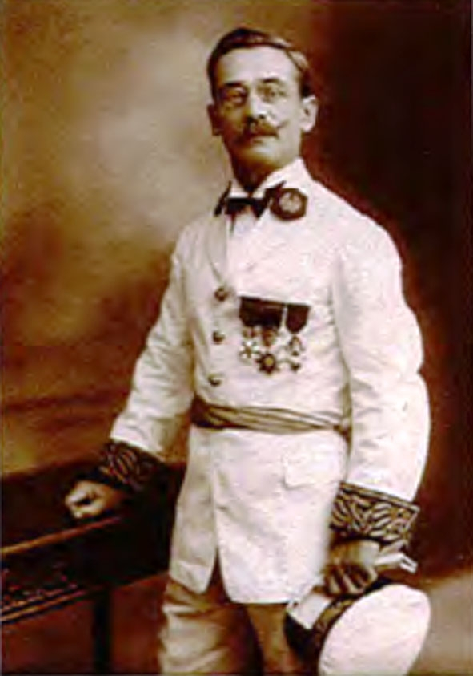
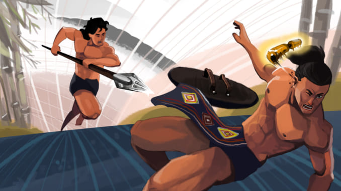

Sử thi Đam San lần đầu tiên được L. Sabatier (một viên công sứ người Pháp tại Tây Nguyên) phát hiện vào năm 1923-1924. Sabatier đã dịch sử thi này ra tiếng Pháp và xuất bản ở Paris năm 1928.
Năm 1959, sử thi này được giới thiệu trên tạp chí Văn nghệ quân đội và được nhà xuất bản Văn hoá in song ngữ Việt – Ê Đê (bản dịch của Đào Tử Chí) với tên gọi là Bài ca chàng Đam San. Năm 1988, Nhà xuất bản Khoa học xã hội đã công bố văn bản sưu tầm và dịch sử thi Đam San rất công phu của Nguyễn Hữu Thấu
Trước khi khán giả có những giây phút nín thở chứng kiến quả loạt sút cân não này và xem ai sẽ là bên đi tiếp, cách giải quyết các trận bóng có kết quả hòa có phần may rủi hơn. Tuy đá luân lưu vẫn gây ra nhiều tranh cãi trong cộng đồng môn thể thao vua, đây vẫn được cho là cách hiệu quả, công bằng nhất ở thời điểm hiện tại.
|  |
|
Léopold Sabatier |
Tóm tắt
Do sự can thiệp của Trời, Đăm Săn phải khuất phục trước sức mạnh của tập tục hôn nhân nối dây và lấy hai chị em Hơ Nhị và Hơ Bhị. Đăm Săn tiếp tục có những hành động chống lại cuộc hôn nhân, chàng chặt cây smuk, cây sinh ra Hơ Nhị và Hơ Bhị. Do vậy, Hơ Nhị và Hơ Bhị đã hai lần chết.
Khi vợ chết, Đăm Săn lại khóc thương và xin thần linh cho vợ chàng sống lại. Đăm Săn đã lập nên nhiều kì tích. Trong đó, kì tích lẫy lừng hơn cả là những chiến công đánh thắng hai tù trưởng Mtao Grư và Mtao Mxây, hai tù trưởng đã cướp vợ chàng. Buôn làng Đăm Săn trở nên giàu mạnh.
Thực hiện khát vọng siêu Việt của mình, Đăm Săn đã đi cầu hôn với Nữ thần Mặt Trời nhưng thất bại và bị chết trong rừng. Đăm Săn chết, cháu Đăm Săn lại tiếp tục con đường của cậu mình.

|
|
Ảnh: |
1. Sử thi dân gian là những sáng tác tự sự có quy mô tương đối lớn, bằng văn vần hoặc kết hợp văn xuôi với văn vần, có nội dung kể lại những sự kiện lớn có tầm quan trọng đối với toàn thể cộng đồng.
Sử thi gồm hai loại chính:
- Sử thi thần thoại hình thành trên cơ sở hộ thống hóa các thần thoại rời rạc. Do đố nội dung loại sử thi này thường mang chủ đề của thần thoại: Đẻ đất đẻ nước.
- Sử thi anh hùng mô tả sự nghiệp, chiến công của người anh hùng có ảnh hưởng đến toàn thể cộng đồng: Đăm Săn.
Sử thi Đăm Săn là một sử thi anh hùng của người Ê-đê – Tây Nguyên. Tác phẩm không chỉ nổi tiếng ở trong nước mà còn cả trên phạm vi thế giới. Nội dung chính của thiên sử thi là miêu tả những chiến công oanh liệt và những khát vọng tự do của Đăm Săn – người tù trưởng trẻ tuổi, tài năng lỗi lạc.
Tác phẩm gồm 8 chương, chia làm bốn phần:
- Theo tục “nối dây”, Đăm Săn cưới hai chị em IIơ Nhị, Hơ Bhị rồi trở thành một tù trưởng giàu có, hùng mạnh (Chương 1, 2).
- Đăm Săn bảo vệ gia đình và bộ tộc, đánh bại các tù trưởng độc ác: Tù trưởng Kên Kên (Mtao Grư), tù trưởng Sắt (Mtao Mxây), giành lại vợ, đem lại sự giàu có và uy danh cho mình và cộng đồng (Chương 3, 4, 5).
- Đăm Săn phản kháng thần quyền, vượt qua mọi trở ngại của tập tục xã hội, chặt cáy thần và “đi bắt Nữ thần Mặt Trời” nhưng thất bại. (Chương 6, 7)
- Đăm Săn ngã xuống nửa chừng trên con đường thực hiện khát vọng bắt nữ thần Mặt Trời về làm vợ, cháu Đăm Săn ra đời sẽ tiếp tục sứ mệnh còn bỏ dở của Đăm Săn. (Chương 8)
|  |
|
Nguồn: theki.vn |
2. Nhân vật trung tâm trong sử thi Đăm Săn là người anh hùng Đăm Săn được kết tinh bởi những yếu tố" thần kì. Những chiến công và hành động của Đăm Săn xoay quanh hai vấn đề lớn:
Đấu tranh để thoát khỏi những ràng buộc của tập tục hôn nhân theo chế độ mẫu quyền. Đấu tranh chống lại những tư tưởng thù địch để bảo vệ cộng đồng.
3. Nghệ thuật:
Ngôn ngữ trang trọng, giàu hình ảnh, giàu nhịp điệu; sử dụng nghệ thuật so sánh bổ sung, nghệ thuật so sánh tương phản, miêu tả phóng đại. Giọng điệu sôi nổi, hào hứng, lôi cuốn người đọc.
4. Đoạn trích Chiến thắng Mtao Mxáy là chi tiết thứ ở trong 13 chi tiết kể về cuộc chiến đấu của Đăm Săn giành lại Hơ Nhị từ tay tù trưởng Mxây.
Đây là đoạn trích tiêu biểu khắc họa rõ đề tài, chủ đề tác phẩm, khẳng định sức mạnh của người anh hùng Đăm Săn – một người trọng danh dự, gắn bó với hạnh phúc gia đình, có trách nhiệm với cuộc sống bình yên, phồn vinh của thị tộc.
Nếu như trong tranh tượng thánh, diện mạo con người biến dạng thành những bộ mặt thánh thiện trong sử thi, con người biến dạng thành những nhân vật trác việt, lập được nhiều chiến công vĩ đại mà con người bình thường không thể lập được. Vì vậy không thể thuật được mà chỉ có thể ca hát về những chiến công đó. (V.I-a-prốp)